오픈쇼케이스
오픈쇼케이스 도어, 문을 달지 말지와 문 방식 고르는 법
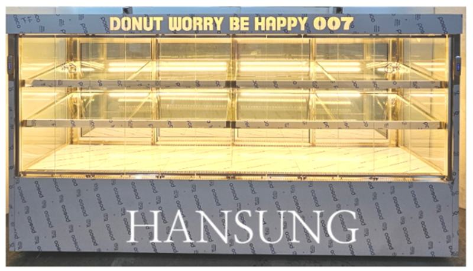
손님이 빠르게 집어 가는 매장이라면 오픈 구조를 유지하고 에어커튼과 야간 차단막으로 냉기를 지키는 편이 낫고, 손님 흐름이 느리거나 온도에 민감한 상품이라면 슬라이딩·여닫이·자동문 같은 도어를 다는 쪽이 맞습니다. 도어를 단다면 손님이 여는 앞쪽과 직원이 채우는 뒤쪽을 따로 정하는 것이 핵심입니다.
안녕하세요. 매장마다 다른 문 구조로 쇼케이스를 만드는 한성쇼케이스입니다.
오픈쇼케이스를 쓰시는 사장님들이 한 번쯤 하시는 고민이 있습니다. "냉기가 계속 빠져나가는 것 같은데 문을 달아야 하나?" 막상 문을 달자니 손님이 집어 가기 불편해질 것 같고, 그대로 두자니 전기 사용과 상품 온도가 신경 쓰이시죠.
오픈쇼케이스의 가장 큰 장점은 손님이 손만 뻗으면 상품을 집을 수 있다는 점입니다. 도어를 다는 순간 이 장점이 일부 줄어드는 만큼, 우리 매장에서 무엇을 더 중요하게 볼지 먼저 정해야 합니다.
오늘은 오픈쇼케이스의 도어 선택지를 하나씩 살펴보고, 어떤 매장에 어떤 방식이 맞는지 정리해 드리겠습니다.
1. 문 없이 쓰되 냉기를 지키는 방법
편의점, 샐러드 매장처럼 손님이 짧은 시간에 집어 가는 곳은 문이 없는 구조가 회전에 유리합니다. 이때 냉기를 지키는 역할은 에어커튼이 맡습니다.
송풍구 위치와 바람 세기를 조절할 수 있는 구조인지, 선반 앞쪽까지 온도가 고르게 유지되는지를 확인해 보세요.
영업이 끝난 뒤에는 야간 차단막을 내려 두는 것만으로도 밤사이 빠져나가는 냉기를 크게 줄일 수 있습니다.
처음 제작할 때 차단막을 달 수 있는 구조인지 미리 정해 두시는 게 좋습니다.
- 에어커튼 바람 세기 조절 단계
- 선반 앞쪽 온도 균일도
- 야간 차단막 적용 가능 여부
2. 슬라이딩 도어와 여닫이 도어
슬라이딩 도어는 문이 앞으로 튀어나오지 않아 통로가 좁은 매장에 잘 맞습니다. 다만 한쪽을 밀면 다른 쪽이 가려지는 구조라 손님이 원하는 칸을 바로 열기 어렵다는 점은 감안해야 합니다.
그래서 직원이 뒤에서 채우는 후면 문으로 많이 씁니다.
여닫이 유리문은 칸마다 따로 열 수 있어 손님이 원하는 상품에 바로 손이 갑니다. 대신 문이 열리는 반경만큼 앞 공간이 필요하니 통로 폭과 함께 계획하세요.
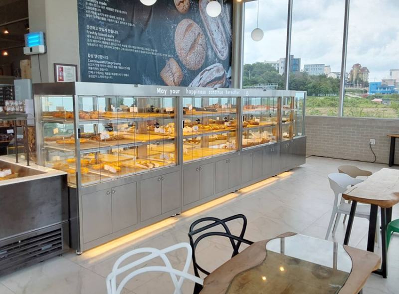
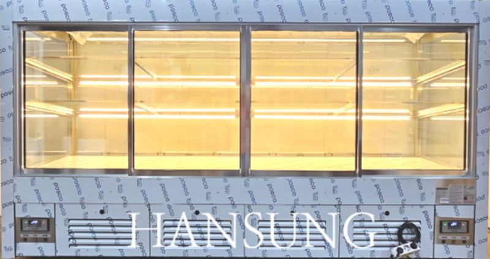
3. 자동문이라는 선택지
최근에는 손을 대면 문이 스스로 열리는 자동문 쇼케이스를 찾는 매장이 늘었습니다. 손님이 문을 밀거나 당기는 번거로움이 줄어 베이커리처럼 손님이 직접 고르는 업종에서도 쓰기 좋고, 문이 열리는 모습 자체가 매장 연출이 됩니다.
자동문은 구성에 따라 제작 기간이 일반 도어보다 길어질 수 있으니 오픈 일정이 있다면 미리 상의해 주세요.
자동문을 고르실 때는 문이 열리는 방향과 속도, 손님이 손을 뗀 뒤 문이 끝까지 닫히는지를 매장 동선에 맞춰 확인하세요.
문이 덜 닫히면 오히려 냉기가 새는 원인이 됩니다.
4. 앞문과 뒷문을 따로 정하기
도어를 고를 때 가장 많이 놓치는 부분이 손님 쪽 문과 직원 쪽 문을 같은 방식으로 생각하는 것입니다.
손님 쪽은 열기 쉬운 방식으로, 직원 쪽은 공간을 덜 차지하는 슬라이딩으로 나누면 두 동선이 서로 방해하지 않습니다.
벽에 붙여 쓰는 오픈쇼케이스라 뒤쪽 보충이 어렵다면 앞쪽 도어만으로 진열과 보충을 모두 해야 하니, 문 폭과 선반 깊이를 상품 크기에 맞춰 정해야 합니다.
- 손님 쪽: 열기 쉬운 여닫이·자동문
- 직원 쪽: 공간을 덜 쓰는 슬라이딩
- 벽 부착형: 앞문 폭과 선반 깊이 확인
체크리스트
- 손님이 머무는 시간과 회전 속도
- 상품의 온도 민감도
- 통로 폭과 문 열림 반경
- 야간 차단막 사용 여부
- 앞문·뒷문 방식 각각 결정
전면 자동문·후면 슬라이딩을 단 베이커리 쇼케이스
감각적인 인테리어의 베이커리 매장에 설치한 자동문 쇼케이스입니다. 기존 슬라이딩 도어는 밀거나 여는 방식밖에 없어 손님이 직접 고르는 베이커리에는 번거롭다는 점을 고민하셨고, 앞쪽은 스마트 도어, 뒤쪽은 슬라이딩 도어로 구성했습니다.
스테인리스로 제작하고 상부에 상호를 새겨 매장 홍보 효과도 함께 노렸습니다. 정면과 측면 모두 내부가 잘 보이도록 디자인했고, 인기 제품이라 제작 기간은 약 5주로 넉넉히 잡고 진행했습니다.
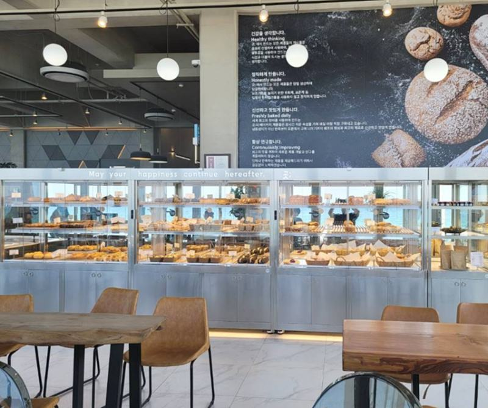
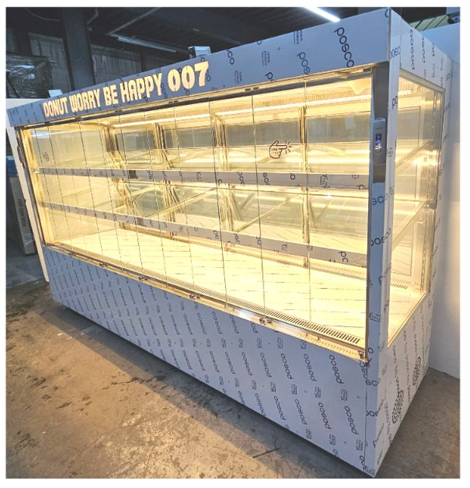
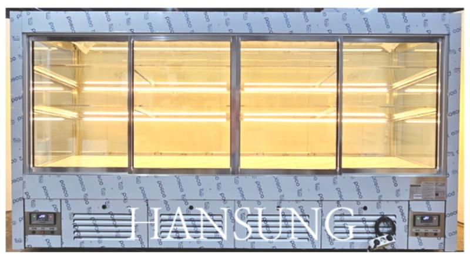
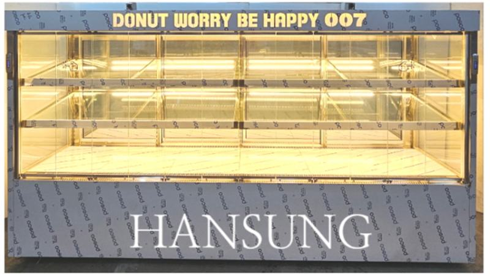
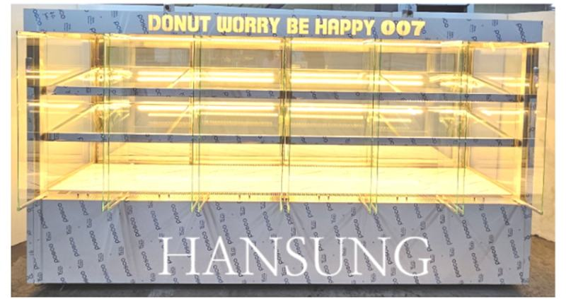
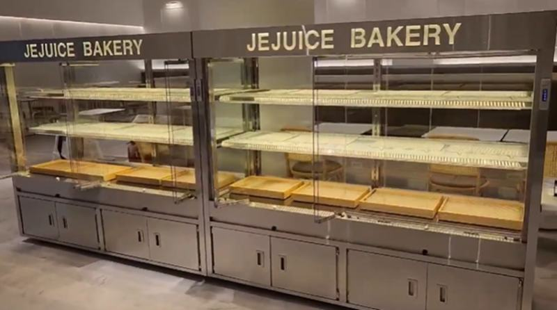
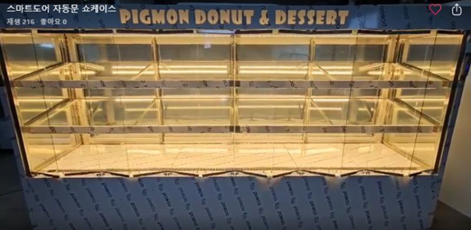
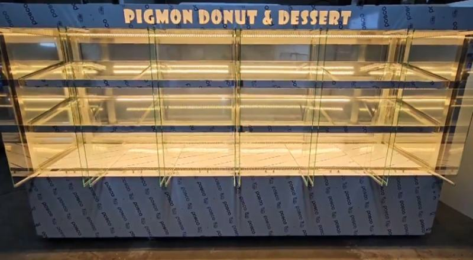
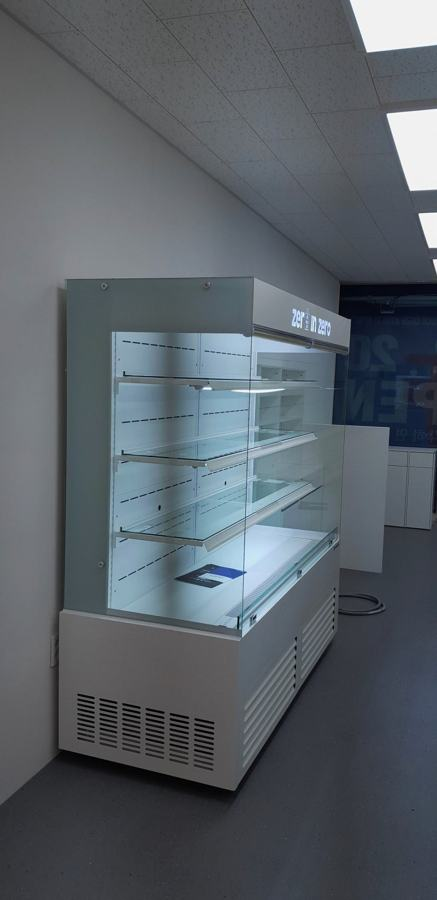
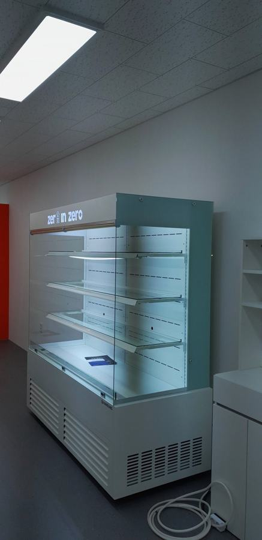
자주 묻는 질문
쓰고 있는 오픈쇼케이스에 나중에 문을 달 수 있나요?
제품 구조에 따라 가능 여부가 다릅니다. 앞면 프레임에 문을 고정할 자리가 있는지, 에어커튼 구조와 간섭이 없는지 확인이 필요하니 모델명과 사진을 보내 주세요.
문을 달면 매출이 줄지 않을까요?
손님이 빠르게 집어 가는 업종이라면 영향을 받을 수 있습니다. 그런 매장은 오픈 구조를 유지하고 야간 차단막과 에어커튼 조절로 냉기를 관리하는 쪽을 먼저 권해 드립니다.
자동문 쇼케이스도 A/S가 되나요?
자동문 제품도 전국 240여 개 A/S 센터를 통해 접수하실 수 있습니다. 문이 끝까지 닫히지 않거나 반응이 늦어지면 바로 연락 주세요.
매장 조건에 맞춰 만드는 한성쇼케이스
원하시는 제품 사진과 설치할 공간 사진만 보내 주셔도 매장에 맞는 구성을 추천해 드립니다.
- 전국 240여 개 A/S 전담 센터 운영
- 본사 대량 자재 매입으로 품질 대비 합리적인 가격
- 유럽제·삼성 냉각 콤프레셔 적용
- 국내 최초 쇼케이스 전문 디자이너 상주
매장 폭과 원하는 진열 구성을 알려 주세요. 실측과 견적을 안내해 드립니다.
031-986-2458